Table of Contents
- 1.
1 概论 - 2. 操作系统的目标与功能
- 3. 操作系统的发展过程
- 4. 操作系统的主要成就
- 5. 操作系统的基本特征
- 6. 操作系统的体系结构
- 7.
2 进程管理 - 8. 进程定义
- 9. 进程状态
- 10. 进程描述
- 11. 内核功能和执行模式
- 12. 进程控制
- 13. 线程
- 14.
2.1 进程调度 - 15. 进程调度
- 16.
2.2 同步 - 17. 同步
- 18.
2.3 死锁 - 19. 死锁
- 20.
3.1 基本内存管理 - 21.
3.2 虚拟内存管理 - 22.
4 IO - 23.
5 文件系统
1 1 概论
2 操作系统的目标与功能
2.1 定义
- 控制应用程序执行的程序
- 应用程序和计算机硬件之间的接口
- 操作系统是一组控制和管理计算机硬件和软件资源， 合理地对各类作业进行调度，以及方便用户使用的程序的集合
2.2 目标
- 方便 (使用)
- 有效 (资源)
- 扩展能力
2.3 基本功能/提供的服务
- 程序开发
- 程序运行
- I/O
- 文件 (对存储介质进行抽象)
- 系统访问 (资源保护/资源竞争)
- 错误检测和响应
- 记账
- 资源管理 (*)
3 操作系统的发展过程
3.1 串行处理
3.2 简单批处理系统
3.3 多道批处理系统
3.3.1 并发 vs 并行
- 并发: 两个或多个事件在同一时间隔内发生
- 并行: 两个或多个事件在同一时刻发生
3.4 分时系统
使用了和多道处理系统相似的技术, 但是目标是减少响应时间(一般来自用户). 一般是为了方便支持多个用户使用同一台计算机. 通常是: 多路, 独立, 及时, 交互的.
3.5 实时系统
目标是使系统能够及时的响应外部事件的请求. 能够在规定时间内开始或完成对该事件的处理.
4 操作系统的主要成就
- 进程
- 内存管理
- 信息保护和安全
- 调度和资源管理
5 操作系统的基本特征
5.1 并发性
最重要, 是其他特性的前提.
5.1.1 并发 vs 并行
- 并发: 两个或多个事件在同一事件间隔内发生
- 并行: 两个或多个事件在同一时刻发生
5.2 共享
系统资源可供多个并发执行的进程共同使用
5.3 虚拟性
对物理实体进程抽象
5.4 异步性(不确定性)
指程序执行过程中的异步性. 即, 我们不能确定:
- 何时执行
- 执行顺序
- 完成运行所需时间
6 操作系统的体系结构
6.1 层次化
6.1.1 优点
- 易于保证正确性
- 易于理解和维护
- 易于扩充
6.1.2 缺点
- 系统效率低
6.2 单体内核
6.3 微内核
6.3.1 优点
- 提高了可扩展性
- 提高了可靠性
- 可移植性好
- 支持分布式系统
6.3.2 缺点
- 运行效率低
6.4 模块化
7 2 进程管理
8 进程定义
为了控制多道程序能够正确的并发执行, 所以引入进程. (并发基于进程)
8.1 典型的定义
- 一个正在执行的程序
- 能分配给处理器并由处理器执行的实体
- {指令, 当前状态, 相关系统资源} -表征的-> (活动单元)
8.2 组成
- 程序代码
- 相关数据
进程控制块
项目 标识符 优先级 程序计数器 内存指针 上下文数据 IO状态 记账信息
8.3 基本特征
- 动态性 (本质) 存在生命周期
- 并发性 (重要) 可以和其他进程一起向前推进
- 独立性 各个进程地址空间相互独立
- 异步性 各自按照独立的, 不可预知的速度向前推进
8.4 进程VS程序
9 进程状态
9.1 进程轨迹(trace)
列出进程执行的指令序列, 可以描述单个进程的行为,
这样的序列称为 进程轨迹(trace).
给出各个进程的trace的交替序列, 可以描述处理器的行为.
书上73页.
9.2 进程状态
9.2.1 三状态模型 {就绪, 执行, 阻塞}
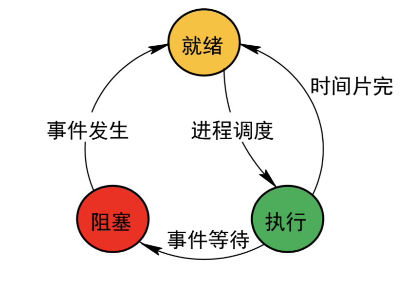
9.2.2 五状态模型 {执行, 阻塞, 就绪, 新建, 终止}
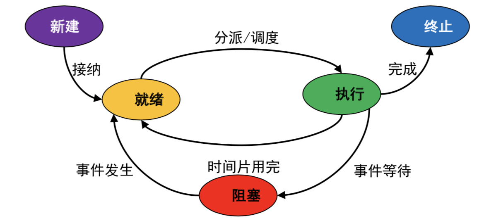
- 新建:
- 已经有了 {进程标识符(PID), 管理进程所需的表格(PCB)}
- 还没有 {将程序加载到主存, 将数据加载到主存, 执行资格}
- 终止:
- 没有了 {执行资格}
- 其他还在

10 进程描述
11 内核功能和执行模式
11.1 内核定义
- 操作系统的核心(包含重要系统功能)
- 常驻内存, 便于提高操作系统的运行效能
11.2 内核功能
11.2.1 资源管理功能
11.2.2 支撑功能
11.3 执行模式 {内核, 用户}
- 原因: 保护操作系统的数据结构不被破坏
- 实现: IA-64体系结构处理器中的PSR寄存器中存在指示执行模式的位
11.4 模式切换的原因
- 系统调用/中断
11.5 模式切换vs进程切换
- 模式切换不一定会导致进程切换
12 进程控制
12.1 内容
- {创建, 撤销}
- {阻塞, 唤醒}
- {挂起, 激活}
- 切换@{时钟中断, I/O中断, 内存失效, 陷阱(当前指令出问题), 系统调用}
12.2 实现
进程控制由原语实现.
12.2.1 原语 (Primitive)
用于完成一定功能的过程. 原子操作, 不允许被中断.
12.3 Unix 进程控制
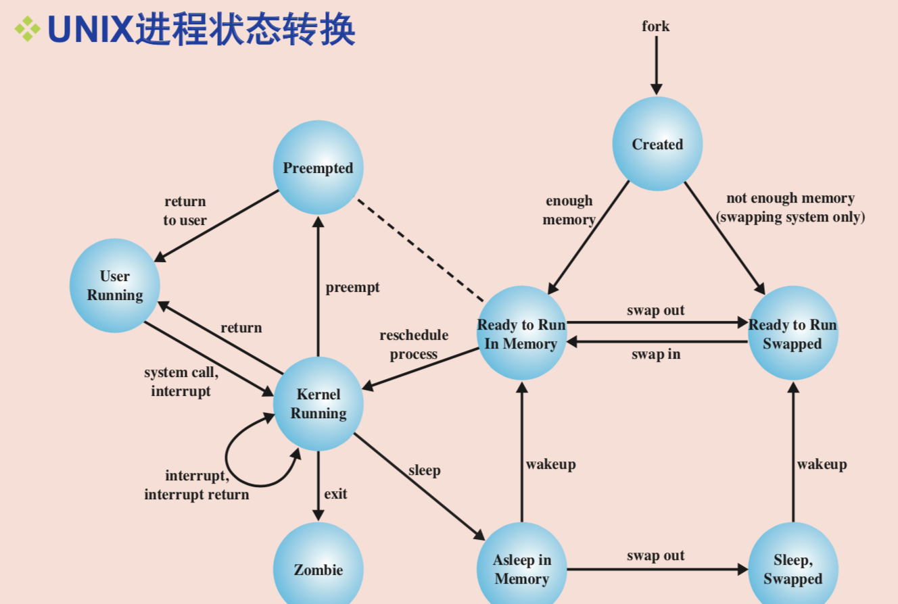 注意fork():
- fork()在子进程中返回0,
- 在父进程总返回子进程的pid
12.4 进程切换
调度另一个就绪进程占用处理器执行
12.5 进程切换的原因
- 时钟中断
- IO中断
- 内存失效
- 陷阱(指令执行错误/异常)
- 系统调用(处理机进入内核模式)
12.6 进程切换的步骤
- 保存上下文 (保存各种寄存器的值)
- 更新当前进程PCB
- 将当前进程的PCB移动至相应队列
- 选择另外一个进程执行
- 更新这个进程的控制块
- 恢复这个进程的上下文
13 线程
13.1 提出
操作系统应该能够独立处理 资源问题 和 调度问题
13.1.1 区分
- 进程: 资源分配的基本单位
- 线程: 调度和分派的基本单位
13.1.2 一些术语
多线程(multithreading): 指操作系统在 单个 进程内支持多个并发路径的能力 单线程方法:每个进程中只有一个线程在执行的方法
13.1.3 例子
| 单线程 | 多线程 | |
| 单进程 | MS DOS | Java 运行环境 |
| 多进程 | 传统Unix | Windows, Solaris, 现代Unix |
13.2 多线程环境, 用到的资源和保护
- 容纳进程映像的虚拟地址空间
- 对{CPU, 其他进程, 文件, I/O}的受保护访问.
13.3 每个线程的内容
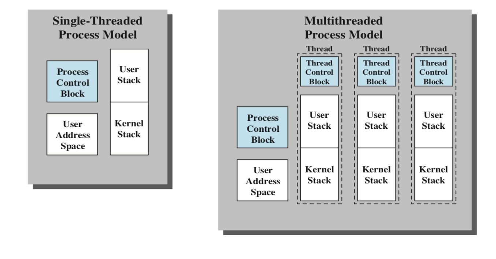
- {state(ready, block …), context(register …), stack{user, kernel}}
- 用于存放局部变量的静态存储空间
- 与进程内其他线程共享的内存和资源访问
13.4 线程状态变化的基本操作
- 派生
- 阻塞
- 解除阻塞
- 结束
13.5 线程的优点
- 创建时间小于进程
- 终止时间小于进程
- 切换时间小于进程
- 提高了不同执行程序间通信的效率
14 2.1 进程调度
15 进程调度
15.1 背景
有多个进程(线程)竞争CPU, 需要选 择下一个要运行的进程(线程)
15.1.1 定义
- 用来完成这部分工作的程序成为调度程序
- 调度程序使用的算法称为调度算法
15.2 类型
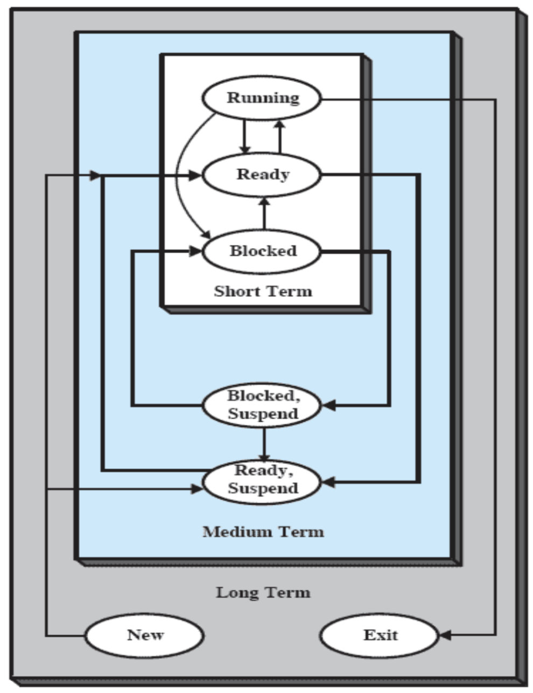
15.2.1 长程调度
- new, exit
- 决定哪个程序可以进入系统中处理
- 决定了系统的并发度
15.2.2 中程调度
- suspend
- 交换功能的一部分
- 是否换入取决于并发度的需求(有些要考虑进程的存储需求)
15.2.3 短程调度
- running, blocked, ready
- 分派程序, 决定下次执行哪个进程
- 导致当前进程阻塞或者抢占当前运行进程的事件发生时, 调用短程调度程序.
- 事件: (1) 时钟中断 (2) I/O中断 (3) 系统调用 (4) 信号(信号量)
15.3 概念
15.3.1 响应时间
提交一个请求, 到收到响应之间的时间间隔
- 响应时间 = 输入传送时间 + 处理时间 + 响应传送时间
15.3.2 周转时间(驻留时间)
一个进程从提交到完成之间的时间间隔, \(T_i\)
- 构成: 等待资源时间 + 执行时间
15.3.3 截止时间
某任务必须{开始/完成}的最迟时间
15.3.4 系统吞吐量
单位时间内, 系统完成的进程数
15.3.5 处理器利用率
处理器处于忙状态的时间百分比
15.3.6 平均周转时间
\(T = \frac{1}{n}\sum_{i=1}^n T_i\)
15.3.7 带权周转时间
\(W_i = \frac{T_i}{T_{si}}\). \(T_{si}\) 表示系统为该进程提供服务的时间
15.3.8 平均带权周转时间
\(T = \frac{1}{n}\sum_{i=1}^n W_i\)
15.4 调度规则设计的出发点
15.4.1 分类
- 用户 – 系统
- 性能相关的划分 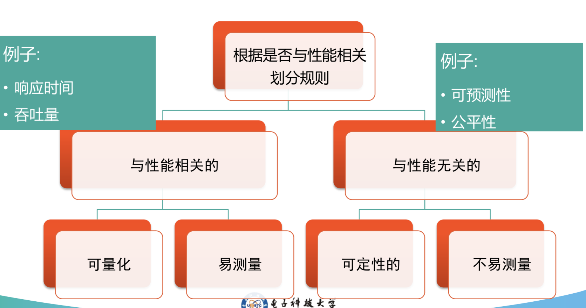
15.4.2 通过分类来选择优化的目标函数
15.4.3 进程的决策模式
- 抢占 (新进程到达, 一个被阻塞的进程变为就绪态, 周期性时钟中断都有可能导致当前进程释放处理机).
- 非抢占 (执行进程只有执行完毕, 或引发了一些阻塞自己的事件时才释放处理机)
15.4.4 调度选择函数
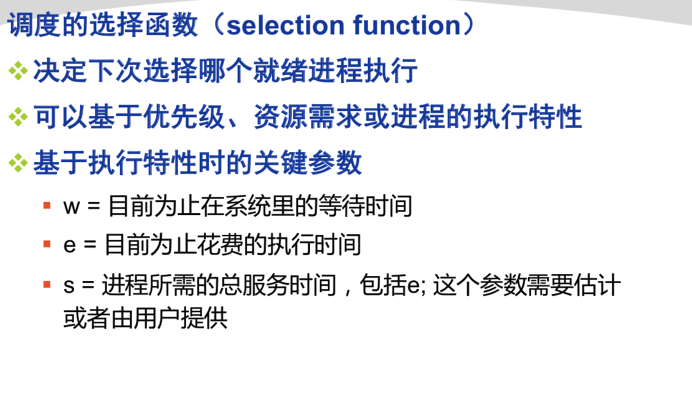
15.4.5 一些调度算法
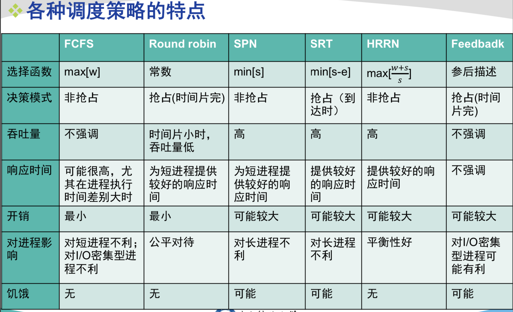
- 注意事项
- 图中标注的非抢占有两重意义
- 决策函数不会导致抢占
- I/O繁忙型进程阻塞之后再返回, 也不能抢占(考虑FCFS).
- 图中标注的非抢占有两重意义
- 评价中出现的一些定义
- 有利: 带权周转时间 \(W_i\) 比其他进程大
- 不利: 带权周转时间 \(W_i\) 比其他进程小
- 评价
- FCFS (先来先服务) (非抢占)
- {长进程有利, 短进程不利}
- {CPU型有利, I/O型不利}
- RR (时间片轮转) (抢占, 时间片完)
- {CPU型有利, I/O型不利} -> VRR算法
- SPN (短进程优先) (非抢占)
- 长进程饥饿
- SRT (剩余时间最短优先) <- 在SPN的基础上增加了剥夺机制 (抢占, 到达时)
- 长进程饥饿
- HRRN (响应比高者优先) <- 综合了一下FCFS和SPN (非抢占)
- FB (反馈法) (抢占, 时间片完)
- 长进程饥饿
- FCFS (先来先服务) (非抢占)
15.5 实时系统与实时调度
15.5.1 定义
15.5.2 实时任务分类
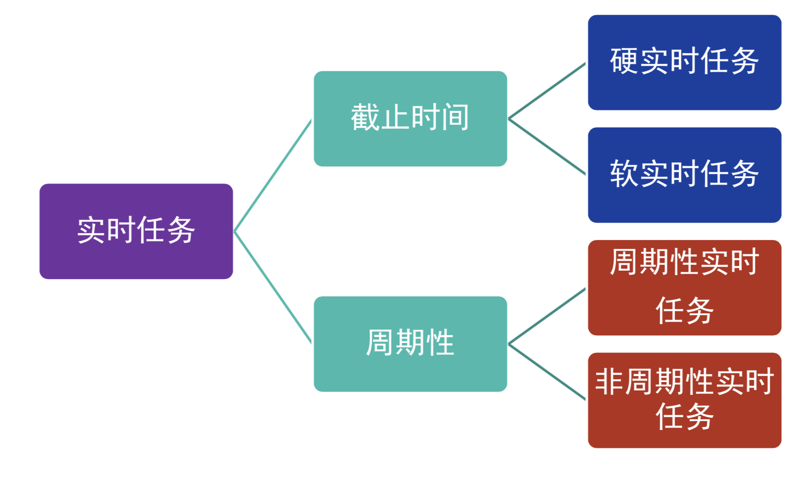
15.5.3 实时操作系统特点
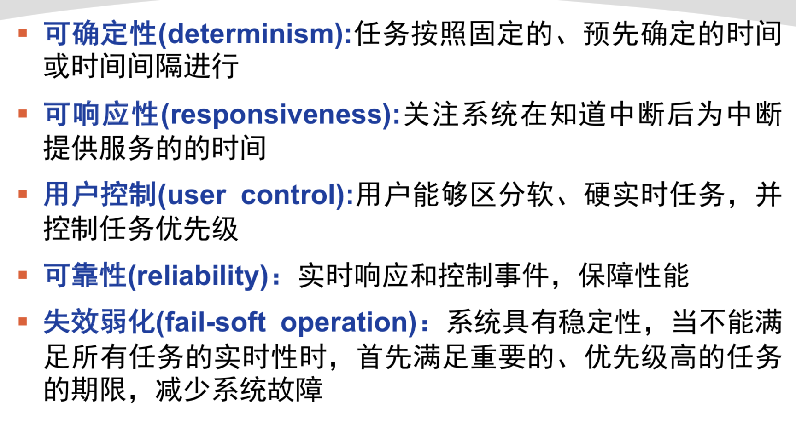 可确定, 可响应, 用户控制, 可靠, 失效弱化
15.5.5 实时进程的调度方法分类
15.5.6 限期 (deadline) 调度
- 定义
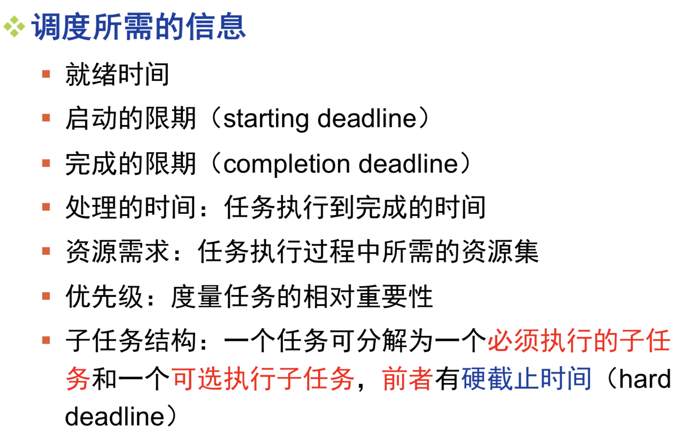
- 下次调度哪个任务
选择deadline最早的任务调度.
- 使用什么抢占方式
- 启动期限明确: 用非抢占方式 (如基于优先级的非抢占式调度) 完成自身必要部分之后阻塞自己, 使其他进程能够启动
- 完成期限明确: 用抢占策略
- 使用什么调度方式
- 具有 完成期限 的 周期性 实时任务 : EDF算法 (最早截止时间优先调度)
- 具有 开始期限 的 非周期性 实时任务:
- if 预先知道所有任务的开始截止时间:
- 允许CPU空闲的EDF调度算法 (最早截止时间调度) <- 可以从全局考虑, 先来的不一定先执行
- if 预先知道所有任务的开始截止时间:
- 速率单调调度算法 (Rate Monotonic Scheduling)
- 任务周期: 任务两次开始时间的差
- 任务速率: 任务周期的倒数
- 如何确定优先级: 周期短 -> 优先级高
- 系统按优先级从高到低调度
- 实时系统处理能力的限制
假定系统有 \(m\) 个周期性硬实时任务, 任务 \(i\) 的处理时间为 \(C_i\), 周期为 \(P_i\). 则在单处理机的情况下, 必须满足下面的限制条件: \[\sum_{i=1}^m \frac{C_i}{P_i} \leq 1 \]
- 优先级反转
一个高优先级的任务, 简洁被一个低优先级的任务所抢先, 使得两个任务的优先级被倒置.


16 2.2 同步
17 同步
17.1 相关术语

.png)
17.2 进程间的关系
- 竞争
- 通过共享合作
- 通过通信合作
17.3 互斥的要求 (访问临界区的原则)
- 空闲让进: 如临界区空闲, 则有进程申请就立即进入
- 忙则等待: 每次只允许一个进程处于临界区
- 有限等待: 保证进程在有限的时间内能够进入临界区
- 让权等待: 进程在临界区不能长时间阻塞等待某事件
17.4 互斥: 软件方法
- 初步设想: 轮换使用临界区 -> 慢
- 第一次改进: 设置临界区状态标志 -> 不互斥
- 第二次改进: 预先表明进入临界区的态度 -> 互斥, 但死锁
- 第三次改进: 预先表明进入临界区的态度+谦让 -> 互斥, 不死锁, 但可能一都在谦让(费时)
- Dekker: 给一个序号(回合号), 每个进程可以在特定的回合不谦让
- Peterson: 和Dekker等价, 但是更简洁了
17.4.1 评价
- 不能解决忙等现象
- 难实现多个进程互斥
17.5 互斥: 硬件方法
17.5.1 屏蔽中断
- 执行效率下降
- 无法工作在多处理器环境
17.6 信号量
17.6.1 实现

17.6.2 常见模型
- 生产者/消费者

- 读者/写者

读者优先

readercount = 0; wsem; x; void reader() { while(1) { P(x); readercount ++; if (readercount == 1) P(wsem); V(x); READ; P(x); readercount ++; if (readercount == 0) P(wsem); V(x); } } void writer() { P(wsem); WRITE; V(wsem); }
公平优先

readercount = 0; wsem; wrsem; x; void reader() { while(1) { P(wrsem); P(x); readercount++; if (readercount == 1) P(wsem); V(x); P(wrsem); READ; p(x); readercount--; if (readercount == 0) V(wsem); v(x); } } void writer() { while(1) { P(wrsem); P(wsem); WRITE; V(wsem); V(wrsem); } }
写者优先

readercount = 0; writercount = 0; x; y; wsem; rsem; void reader() { while(1) { P(rsem); P(x); readercount++; if (readercount == 1) P(wsem); V(x); P(rsem); READ; P(x); readercount--; if (readercount == 0) V(wsem); V(x); } } void writer() { while(1) { P(y); writercount ++; if (writercount == 1) P(rsem); V(y); P(wsem); WRITE; V(wsem); P(y); writercount --; if (writercount == 0) V(rsem); V(y); } }
写者优先改进

readercount = 0; writercount = 0; x; y; wsem; rsem; z; void reader() { while(1) { P(z); P(rsem); P(x); readercount++; if (readercount == 1) P(wsem); V(x); P(rsem); v(Z); READ; P(x); readercount--; if (readercount == 0) V(wsem); V(x); } } void writer() { while(1) { P(y); writercount ++; if (writercount == 1) P(rsem); V(y); P(wsem); WRITE; V(wsem); P(y); writercount --; if (writercount == 0) V(rsem); V(y); } }
- 两种模型比较

17.6.3 管程
有自己局部变量(static), 每个时刻只能有一个进程在管程中. 感觉管程有点像一个类, 但是保证一次只能一个进程在调接口
- cwait(c): 等待条件c成立(阻塞在条件c上)
- csignal(c): 恢复在条件c上阻塞的一个进程(如果条件c上没有这样的进程, 则什么都不做)
 举例:
举例:

18 2.3 死锁
19 死锁
19.1 定义
- 一组相互竞争系统资源或进行通信的进程间的永久阻塞
- 当一组进程中的每个进程都在等待某事件, 而只有同组进程中阻塞的其他进程能够促发该事件时, 死锁发生
19.2 资源分类
- 可重用资源: 一次仅供一个进程安全使用且不因使用而耗尽的资源
- 可消耗资源: 可消耗资源是指可被创建（生产）和销毁（消耗）的资源
19.3 死锁的条件
 只要是死锁, 一定三个必要调价都是满足的.
只要是死锁, 一定三个必要调价都是满足的.
19.4 死锁的解决

19.4.1 死锁预防
- 互斥必须支持
- 防止占有且等待: 一次性请求所有资源
- 防止不可抢占: 申请资源如被拒绝, 则释放之前占有的资源
- 防止循环等待: 定义一个资源请求顺序
19.4.2 死锁避免
 优缺点:
优缺点:

19.4.3 死锁检测与解除


19.4.4 哲学家就餐问题
- 资源分级: 2种方法
- 服务生方法: 鸽笼原理
- 管程方法
20 3.1 基本内存管理
20.1 程序加载与链接
20.1.1 编译
20.1.2 链接
20.1.3 加载
- 加载的任务
- 可加载模块装入内存
- 执行文件中的逻辑地址转化为内存物理地址
- 加载方式
- 绝对加载 (逻辑地址与实际内存地址相同, 地址转换在编译时完成)
- 优点: 简单
- 缺点: (1) 每次加载到的内存区域相同 (2) 程序员必须了解内存的使用情况 (3) 不适用于多到程序系统
- 可重定位加载(静态重定位)
- 编译时使用相对地址, 在加载时将相对地址转化为实际的物理地址
- 程序在加载时必须使用重定位
- 优点: 不需要硬件支持
- 缺点: 程序重定位后不能移动, 不能重新分配内存, 不利于内存的有效利用
- 运行时加载(动态重定位)
- 优点: (1) 程序不用连续, 可移动 (2) 便于共享 (3) 有利于紧凑, 解决碎片问题 (4) 主流
- 缺点: (1) 需要硬件支持 (2) 同一地址, 需要多次转换
- 绝对加载 (逻辑地址与实际内存地址相同, 地址转换在编译时完成)
20.2 内存管理的需求
20.2.1 重定位
20.2.2 保护
20.2.3 共享
20.2.4 逻辑组织
- 内存被组织成为线性地址空间
- 程序按照模块组织
20.2.5 物理组织
- 交给OS
20.3 内存分区
20.3.1 固定分区
- 分区数量固定
- 每个进程占用一个分区
- 划分分区方式: (1) 大小相等 (2) 大小不等
20.3.2 动态分区
- 分区大小/数量不固定
- 分配与进程需求完全一致的空闲内存空间
- 外部碎片 \(\to\) 紧凑
20.3.3 地址类型
- 逻辑地址
- 相对地址
- 物理地址
20.3.4 分页
- 页号: \(P = \lfloor \frac{A}{L} \rfloor\), 页内偏移: \(d = A \mod L\)
- 优点: (1) 存在页内碎片, 但相对较小, 内存利用率较高 (2) 实现了离散分配 (3) 无外部碎片
- 缺点: (1) 需要专门的硬件支持, 尤其是块表 (2) 不支持动态链接, 不易实现共享
20.3.5 分段
- 分段在进行地址转换的时候, 多了一步判越界
- 优点: (1) 便于程序模块化设计 (2) 便于动态链接 (3) 便于保护和共享 (4) 无内部碎片
- 缺点: (1) 地址转换需要硬件的支持 – 段表寄存器 (2) 分段的最大尺寸收到主存可用空间的限制 (3) 有外部碎片
20.3.6 分段 VS 分页
- 页是系统管理的需要, 段是用户需要
- 页的大小固定, 由系统决定, 段的长度不固定
- 页是一维的, 段是二维的
- 分页不易实现共享和运行时动态链接, 分段却易于实现
21 3.2 虚拟内存管理
21.1 术语
- 虚拟内存
- 虚拟地址(逻辑地址)
- 虚拟地址空间: 分配给进程的虚拟存储
- 地址空间: 用于某进程的内存地址范围
- 实地址: 内存中存储位置的地址
- 驻留集: 任何时刻, 进程驻留在内存中的部分
- 内存失效: 访问一个不在内存中的地址时, 称为内存失效
- 局部性原理: 存储器的访问呈簇性, 在很长一段时间内, 使用的簇会发生变化, 但是在很短的时间内, 处理器基本上只与固定的簇打交道
- 抖动: 将要用到的块被换出, 系统又得很快将它取回, 导致页面被频繁地换入和换出, 缺页率极具增加.
21.2 分页
- CPU在处理完缺页中断之后, 会重新检查TLB.
- 页表项: P|M|其他控制位|页框号
21.3 分段
- 段表项: P|M|其他控制位|长度|段基址
21.4 段页式
- 段表项: 控制位|长度|页表基址
- 页表项: P|M|其他控制位|页框号
21.5 读取策略
- 请求调页
- 预调页
21.6 放置策略
21.7 置换策略
- 页框锁定: 锁定之后的页框不能被置换(系统里面的一些重要信息)
21.7.1 置换算法
- 最佳
- LRU
- FIFO
- 时钟
- 时钟(改进): 多分出来一个m位表示是否修改过, 和没有修改过的形成优先级关系. 当访问标志都为0的时候, 要先考虑没有修改过的, 再是修改过的. 访问标志为1的暂时不考虑
21.7.2 页缓冲
21.7.3 驻留集管理
- 页框分配: 给每个活动进程分配多少页框
- 置换范围: 计划置换的页集局限于缺页的进程还是内存里面所有进程
- 固定分配: 为进程提供固定个数的页框
- 可变分配: 允许分配给进程的页框数在进程的生命周期内变化
- 置换范围和分配方式可以有不同组合, (注意没有固定分配+全局置换)
22 4 IO
22.1 IO功能的三种控制方式
- 程序IO
- 中断
- 应用: 鼠标, 键盘(字符设备)
- DMA
- 应用: 磁盘(块设备)
- IO通道/IO处理机
- DMA VS IO通道:
- DMA: CPU控制, CPU一条指令, 传送一个数据块
- IO通道: 有自己的指令集(可以执行通道程序), 可以完成一组数据块的传输, 可以和CPU, IO设备并行操作
- DMA VS IO通道:
22.2 IO功能层次模型
22.2.1 Framework
- 用户进程 -> 逻辑IO -> 设备IO -> 调度和控制 -> 硬件
- 用户进程 -> 通信架构 -> 设备IO -> 调度和控制 -> 硬件
- 例子: 文件系统
22.2.2 设备独立性/设备无关性
- 应用程序独立于具体使用的物理设备
- 逻辑IO模块, 允许使用设备的逻辑名, 通过简单的设备操作指令和设备打交道
- 设备IO模块, 将逻辑IO操作转化为对应的物理设备的IO访问控制
22.3 缓冲
- T: 传输时间, C: 计算时间, M: 移动时间(系统缓存 -> 程序内存空间)
- CM一定不能同时运行, 但是CT, MT都是可以的
- 无缓冲 (T + C)
- 单缓冲 \(\max\{T, C\} + M\)
- 双缓冲 \(\max\{T, M+C\} \approx \max\{T, C\}\)
- 循环缓冲
22.3.1 缓冲的作用
(1) 缓解IO设备的速度与CPU速度不匹配的矛盾 (2) 多道程序环境中, 当存在多种IO活动和多种进程活动时, 缓冲可以提高操作系统的效率.
22.4 SPOOLing技术
将与IO设备交互要用到的数据暂存在磁盘中, 可以将IO设备模拟成为多个虚拟设备, 然后给多个不同的饿用户使用. (在磁盘中维护一个操作队列).
22.5 磁盘
22.5.1 概念
- 存储面
- 磁道
- 扇区
- 柱面
22.5.2 时间
- \(T_s\) 寻道时间
- \(T_r = \frac{1}{2r}\) 旋转延时
- \(T_t = \frac{b}{rN}\) 传输时间
- \(T_a = T_s + T_r + T_t\) 磁盘访问时间
22.5.3 磁盘调度策略
- FIFO
- PRI(优先级)
- LIFO(后进先出)
- SSTF(最短寻道时间优先)
- SCAN(电梯算法), 不停内外扫描
- C-SCAN, 只朝一个方向扫描
- SSTF, SCAN, C-SCAN都有粘着现象
- N-step-SCAN, 一次只处理一个长度为N的队列.
- FSCAN, 一次性将队列清空扫描一次, 之后加进来的暂时不管
22.5.4 RAID
0 -> 6
23 5 文件系统
23.1 概念
- 域 (some value)
- 记录 (a row of value)
- 文件 (a column of records)
- 数据库 (a set of files)
23.2 文件组织和访问
- 堆
- 顺序文件
- 索引顺序文件
- 索引文件
- 直接或散列文件
23.3 记录组块
- 定长
- 变长非跨越式
- 变长跨越式
23.4 文件分配
文件由许多块组成, 给文件分配的是一些分区(分区: 一些连续的已分配的块).
23.4.1 分配策略

23.4.2 空闲空间管理
- 位示图
- 链接空闲分区
- 索引
23.5 文件共享
- 软连接
- 硬链接
23.6 卷
- 卷是逻辑磁盘, 是一组可寻址的扇区的集合
23.7 UNIX文件管理
- Unix文件系统驻留在单个逻辑磁盘或磁盘分区
- Boot Block|Super Block|Inode Table|Data Blocks